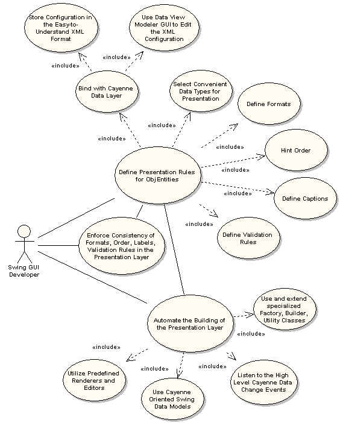

|
LOCAL DOCS
ONLINE RESOURCES |
| 13. DataViews
13.1 Swing Applications Those who have experience of Swing GUI development knows how much time it takes to work out all the minutest details of formatting, in-place input validation, handling the interactive data modification, enforcing naming, order, and formatting consistensy, etc. Whenever the domain or requirements change (e.g. new attributes are added to an ObjEntity, formats or captions of data are modified, or relationships change their meaning) developers are faced with the necessity to go through the number of Swing data models, panels, various helpers fishing out the bits of code to be corrected. Another problem is the need for quick and easy prototyping of data aware GUIs. Those who, at one time or another, worked with Borland VCL for C++ or Delphi or DataExpress/dbSwing for Java and similar frameworks can recall how painless it was to create a rough prototype of the GUI working with the relational database and bind it to the actual data. That was possible due to the layer of easily configured data aware classes and components. And once the working prototype had been ready, refinining it used to be a very simple task. Cayenne DataViews solve these problems. Data Views act as a bridge between the domain defined in terms of Cayenne DataObjects and a presentation layer built with Swing. Potentially they can be used in the Web environment as well, but Swing integration is the main direction. Conceptually, Data Views are close to the application facades described, for instance, by Martin Fowler. The following figure shows the area where Data Views can be applied. 
|
|
User Guide - version 1.1
TABLE OF CONTENTS:
5. Generating Classes with Ant
13. DataViews
|
| Copyright ©2001-2004 ObjectStyle Group |